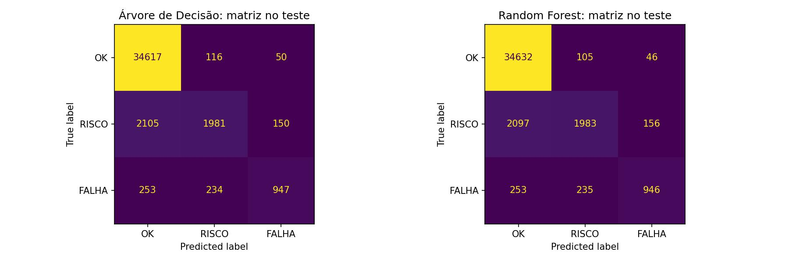
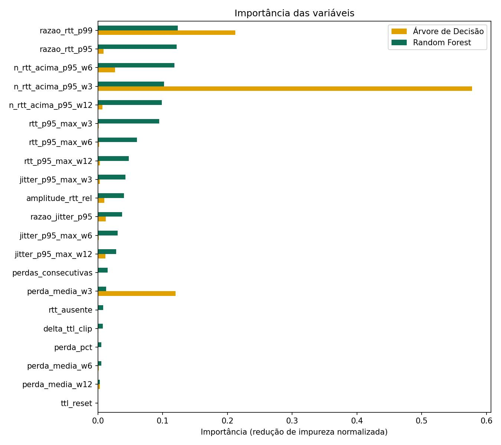

Redes não caem de uma vez
Antes da queda, a latência sobe e alguns pacotes começam a se perder.
O Preditor de Falhas na Rede é um projeto acadêmico que desenvolve um sistema preditor para a qualidade de caminhos da internet. Seu objetivo é prever se a próxima medição de ping de um caminho será normal, de risco ou de falha, a partir de medições públicas de ping do RIPE Atlas em 131 caminhos pelo mundo — com potencial para avisar quem opera a rede: investigar quando houver falha, observar quando houver risco e não agir quando estiver tudo bem.
O projeto parte do ping, que existe em qualquer rede e mede três coisas a cada envio: o tempo de ida e volta (latência), quantos pacotes não voltaram (perda) e o quanto esse tempo variou (jitter).
A dificuldade está em definir o que é "alto". Não existe um limite de latência que sirva para todos os caminhos. Um caminho curto normal fica em 1 ms; um que atravessa o oceano, normal, fica em 300 ms. Um limite fixo mediria distância, não problema.
Nenhum pacote perdido, latência e jitter dentro da faixa normal do caminho.
Nenhuma ação1 de 3 pacotes perdido, ou latência ou jitter acima do P95 do caminho.
Observar2 ou 3 de 3 pacotes perdidos, ou latência acima do P99 do caminho.
InvestigarCada caminho é a sua própria régua
A ideia central cabe em uma frase: comparar o caminho com ele mesmo.
Na primeira semana, o sistema observa cada caminho e congela o normal dele: a mediana, o P95 e o P99 da latência e do jitter. Na segunda semana, cada medição vira uma comparação com esse normal — uma razão, não um número absoluto. Por isso o modelo nunca vê latência em milissegundos, nem país, nem endereço IP, nem distância.
Caminho = sonda → âncora
Cada caminho liga uma sonda de origem a uma âncora de destino do RIPE Atlas: 30 destinos em 30 países, com 3 a 5 sondas cada.
O normal congelado
Sete dias de referência definem o P95 e o P99 de cada caminho. Só vale com pelo menos 30 medições válidas e 80% de cobertura.
A memória recente
São 21 variáveis: a medição atual contra o normal, mais o que aconteceu nas últimas 3, 6 e 12 medições — cerca de 12, 24 e 48 minutos.
Do ping ao alerta
Sete etapas, cada uma usando só o que a anterior entregou.
Duas semanas de pings reais
Malha pública do RIPE Atlas, de 21/09 a 05/10/2026.
A separação entre treino, validação e teste é por tempo, não por sorteio: treino nos cinco primeiros dias, validação no sexto, teste no último, com 60 minutos de intervalo entre os blocos para que nenhuma informação vaze de um para o outro. Além disso, 13 caminhos ficaram inteiramente fora do treino, para medir o que acontece diante de uma rota que o modelo nunca viu.
Melhor que repetir o estado atual
A régua honesta não é o acaso: é supor que a próxima medição será igual à de agora.
F1 macro no teste, de 0 a 1. São 40.453 medições do último dia, e o teste foi aberto uma única vez, em 11/10/2026.
| Indicador no teste | Random Forest | Árvore |
|---|---|---|
| F1 macro | 0,7675 | 0,7673 |
| Falhas detectadas (recall de FALHA) | 0,66 | 0,66 |
| Quando avisa FALHA, está certo (precisão) | 0,82 | 0,82 |
| Riscos detectados (recall de RISCO) | 0,47 | 0,47 |
| Acurácia | 0,93 | 0,93 |


Monitoramento e predição ao vivo
Cada ciclo envia três sondagens, mede o tempo de ida e volta e a perda, e passa a medição pela árvore de decisão treinada no projeto para prever a classe da próxima.
Clique em “Iniciar monitoramento”. Os primeiros 20 ciclos servem para o sistema aprender o normal de cada alvo; só depois ele começa a classificar.
Histórico das últimas 40 medições
Sem medições ainda.
Simular evento
Injeta um problema artificial na próxima medição, para demonstrar RISCO e FALHA sem depender do estado real da rede.Nenhum evento injetado. Cada botão mantém o problema por 4 ciclos, calculado em cima do baseline do próprio alvo. Toda medição marcada com SIM no histórico e na tabela é simulada; as demais são medições reais.
O que esperar. Os dois eventos de latência e queda levam o estado a FALHA e a previsão da árvore acompanha a partir do segundo ciclo. Os dois eventos de risco levam o estado a RISCO, mas a previsão tende a continuar OK: esse é o ponto fraco medido do modelo — recall de RISCO de 0,47, e o erro mais comum na matriz de confusão é justamente RISCO previsto como OK.
Registro
| # | Alvo | Hora | Latência | Perda | Razão P95 | Estado agora | Previsão p/ a próxima | Confiança | Origem |
|---|
Como esta aba funciona, e o que ela não é
A medição é real. Cada ciclo faz três requisições ao alvo e mede o tempo de ida e volta de cada uma, do seu computador, agora. A perda é contada quando uma requisição falha ou estoura 2 segundos.
Não é ping ICMP. O navegador não envia pacotes ICMP nem enxerga a rede local — isso é uma limitação do navegador, não do projeto. O que medimos é o tempo de ida e volta de uma requisição HTTP, que é uma medida de rede real, mas não é o mesmo que o ping do sistema operacional. A versão do projeto que roda em Python usa ICMP de verdade.
O baseline é provisório. O modelo compara cada medição com o P95 e o P99 daquele caminho. Os caminhos do RIPE Atlas têm um baseline congelado com sete dias de observação; um alvo novo, não. Por isso o dashboard observa 20 ciclos antes de classificar e usa esse baseline provisório, que é menos confiável que o de sete dias.
O TTL não existe aqui. Duas das 21 variáveis dependem do TTL do pacote, que o navegador não expõe. Elas recebem o valor −1, que é exatamente a sentinela que o modelo foi treinado para receber quando falta esse dado.
É a árvore, não a floresta. O modelo final do projeto é um Random Forest de 200 árvores, com 244 MB — grande demais para rodar no navegador. Aqui roda a árvore de decisão do projeto (profundidade 12, folhas com no mínimo 100 amostras), que obteve macro-F1 de 0,7673 no teste contra 0,7675 do Random Forest. A diferença entre as duas é de 0,0002.
Na aba anterior o baseline é provisório, calculado na hora. Aqui não: escolha um dos 131 caminhos do RIPE Atlas e o sistema usa o P95 e o P99 congelados daquele caminho, medidos ao longo de sete dias. As execuções são geradas a partir desse normal, no cenário que você pedir, e passam pela mesma árvore treinada.
Execuções geradas
| # | Cenário pedido | Latência | Perda | Estado agora | Previsão p/ a próxima | Confiança |
|---|
O gerador sorteia execuções em volta do normal do caminho e descarta as que não caem na classe pedida — é o mesmo método do preditor.py que está no repositório. A previsão vem da árvore de decisão; a versão em Python usa o Random Forest, com desempenho praticamente igual: 0,7675 contra 0,7673.
Estes são os 131 caminhos reais usados no projeto, com o normal de cada um congelado entre 21 e 28/09/2026. Repare na distância entre o menor e o maior: é por isso que um limite fixo de latência não funciona.
P95 da latência de cada caminho
Escala logarítmica. Cada barra é um caminho.Tabela dos caminhos
| Caminho | Mediana | P95 | P99 | P95 jitter | TTL | Conjunto |
|---|
O que ele ainda não faz
Medimos também onde o modelo falha. Isso faz parte do resultado.
As previsões dependem da qualidade e das características dos dados analisados. Por isso, devem ser interpretadas como estimativas do modelo, e não como garantias. As limitações específicas que identificamos são estas:
- Antecipa pouco o começo de uma falha. Quando tudo estava normal e a próxima medição foi FALHA, acertou 8 de 411 casos. Funciona como um detector que confirma o problema, não como um alarme que o prevê.
- Caminhos curtos novos. Nos 13 caminhos que nunca viu, não detectou as degradações dos caminhos mais curtos.
- Dados limitados. São 14 dias, só ping IPv4 com 3 pacotes, e sondas instaladas em data centers — não em casas ou escritórios.
- O rótulo é uma regra, não um laudo. RISCO e FALHA vêm do P95 e do P99 de cada caminho, e não de uma falha confirmada pela operadora.
O projeto em 90 segundos
O problema, a ideia do normal por caminho, como o modelo funciona e o que os números mostram.
Quem construiu
- Curso
- Ciência da Computação, 4º semestre · Centro Universitário Braz Cubas
- Orientadora
- Profª Andrea Ono Sakai — Estrutura de Dados II
- Repositório
- github.com/GzTop1/Redes-Projeto
- Dados
- RIPE Atlas, malha pública de medições de ping, acessada pela API REST (somente leitura)
- Ferramentas
- Python, pandas, NumPy, scikit-learn e Google Colab
- Referências
- RIPE NCC, RIPE Atlas REST API manual · Breiman, Random forests (2001) · Breiman et al., Classification and regression trees (1984) · Pedregosa et al., Scikit-learn: machine learning in Python (2011)